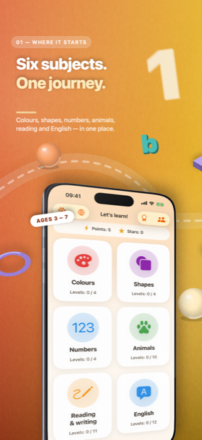
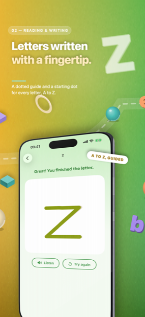
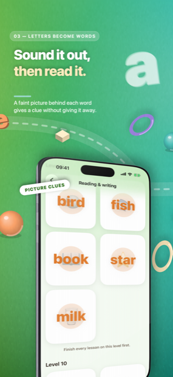
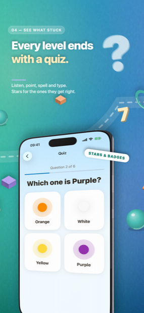
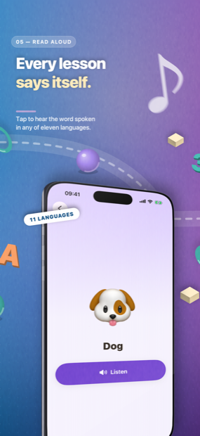
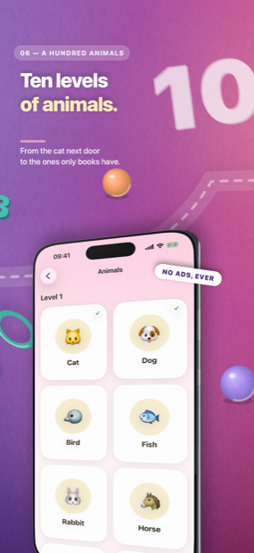

Ages 3–7 · iPhone & iPad
Preschool learning your child can actually read.
Your child traces their first letter with a fingertip, hears the sound it makes, and a few lessons later reads a word they wrote themselves — in any of eleven languages, each with its own alphabet.

- ✓ No advertising
- ✓ No tracking, no analytics
- ✓ No account, no sign-up
- ✓ Works offline
- ✓ Parent lock on every launch
It teaches reading the way reading is taught
Most alphabet apps walk a child from A to Z. That order spells nothing for weeks. ZuzuKids uses the order each language is actually taught in, so a child is reading real words within the first few lessons.
English starts with s · a · t · p · i · n because those six letters already spell sat, pin and tap — the sequence synthetic phonics schemes use in UK and US classrooms.
Russian starts with а · у · о · м · с · х because those spell мама, the first word a Russian child learns to read.
Arabic follows letter shape and joining behaviour rather than the alphabet song, and Japanese begins with the あ-row of hiragana. Eleven languages, eleven genuinely different teaching orders — not one lesson plan with the labels translated.
Guided letter tracing
A dotted guide and a starting dot for every letter, in the stroke order that language is written in. The app says so when a stroke goes the wrong way.
Letters into syllables into words
Each rung builds on the one below: sounds, then syllables, then words a child can sound out instead of being told the answer.
Every lesson read aloud
Tap to hear the word spoken in the language being learned, so a parent who does not speak it can still sit alongside.
A quiz, then stars
A level ends with a short quiz rather than a "well done" screen. Badges take weeks to fill, not one afternoon.
Six subjects, one path
840 lessons in all: 24 colours, 20 shapes, numbers up to 1000, 100 animals, an English track, and a full reading and writing track in each of the eleven languages.





Eleven languages, eleven alphabets
Each language has its own reading track, so a child learning Cyrillic and a child learning the Latin alphabet are not sharing one lesson plan. For families raising a child in two languages, both live in one app and each keeps its own progress.
- a b c … zEnglish · 26 letters
- ç ğ ı i ö ş üTurkish (Türkçe) · 29 letters
- ä ö ü ßGerman (Deutsch) · 26 letters and four more
- é è ê ç œFrench (Français) · 26 letters with accents
- ñSpanish (Español) · 27 letters
- a b c … zItalian (Italiano) · 21 letters, no j k w x y
- ã ç õPortuguese (Português) · 26 letters
- а б в гRussian (Русский) · 33 Cyrillic letters
- ا ب ت ثArabic (العربية) · 28 letters, right to left
- 汉 字Chinese (简体中文) · characters and pinyin
- あ い うJapanese (日本語) · hiragana and katakana
Letter counts are the alphabet each country teaches in its own first year of school — which is why the Italian track never introduces j, k, w, x or y, and the Turkish one starts from a 29-letter alphabet rather than an English one with extra marks added.
Built to be handed to a four-year-old
The things that make a children's app safe are not features you switch on. They are decisions taken before the first screen was drawn.
A parent gate you set yourself
There is no preset PIN. You choose one on first launch, and it stands in front of purchases, settings and every link out of the app. Face ID can be a shortcut past it, never a replacement.
Nothing to sell your child
No advertising of any kind, no cross-promotion, no "watch a video to unlock". A child cannot reach the web, a chat, or another person from inside the app.
Nothing leaves the device
No account, no server of ours, no analytics, not one third-party SDK. Progress lives on the device and, if you want it, in your own private iCloud. Read the privacy policy.
A daily limit, if you want one
Set minutes per day per child, and grant extra time for one day without changing the limit. Each child gets their own profile, progress and badge shelf.
Works with no signal at all
All 840 lessons ship inside the app. A flight, a car journey, a waiting room — it behaves the same.
Honest about what it is
ZuzuKids is a practice tool, not an assessment. It does not diagnose a learning difficulty, and progress inside it is not a measure of a child's ability.
What is free, and what is not
The free part is not a taster. Half an alphabet spells nothing, so the whole alphabet is free to learn — in every one of the eleven languages.
Free no account needed
- The complete alphabet in all eleven languages
- The first level of Colours
- Every parent control: profiles, time limits, the gate
- No advertising, ever — including here
ZuzuKids Premium $5.99/wk · $12.99/mo
- All 840 lessons: 24 colours, 20 shapes, numbers to 1000, 100 animals
- The syllables and words that follow the alphabet in each language
- Shared across every child profile on the device
- Cancel any time in iOS Settings; deleting the app does not cancel it
Prices shown in US dollars; the App Store shows your own country's price before you buy. A subscription renews automatically unless cancelled at least 24 hours before the current period ends, and is charged to your Apple Account at confirmation of purchase. Use is governed by the Terms of Use and Apple's standard End User Licence Agreement.
Questions parents ask
What age is ZuzuKids for?
Roughly ages 3 to 7. The early lessons — colours, shapes, first letters — suit a three-year-old with an adult nearby. The syllable and word work carries a child through to reading on their own.
Are there ads?
None. No banners, no video rewards, no cross-promotion, and no links a child can follow out of the app. There is not a single third-party SDK in the build.
Do you collect anything about my child?
No. There is no account, no server of ours, and no analytics. A child's first name, birth year and progress stay on the device, and in your own private iCloud if you have it switched on. The parent PIN is stored as a salted hash — the digits are never written down anywhere. The full detail is in the privacy policy.
Does it work offline?
Completely. All 840 lessons ship inside the app. The only network activity possible is between your device and Apple, when a subscription is bought or restored.
Can two children share one iPad?
Yes. Add a profile per child in the parent area. Progress, stars, streaks and the badge shelf are separate for each; only the subscription is shared.
My child already knows their letters. Can they skip ahead?
Yes. When you create a profile you can set a starting level, so a child who already knows their colours does not have to prove it. It never closes anything — they can always walk back down.
Who reads the lessons aloud?
The device's own speech synthesiser, in the language being learned. Pronunciation is generally good and occasionally imperfect, particularly for individual letter sounds. Treat it as a guide alongside an adult's voice rather than a replacement for one.
How do I cancel?
Subscriptions are managed by Apple, not by us: open the Settings app, tap your name, then Subscriptions. Cancelling at least 24 hours before the period ends stops the next charge. Deleting the app does not cancel it.
I forgot the parent PIN.
Tap Forgot your PIN? on the gate and confirm with the device passcode or biometrics. That clears the PIN so you can choose a new one; profiles, progress and badges are untouched. It also means anyone who knows the device passcode can reset the gate — so keep that passcode away from the child.
Still stuck? Write to us.
Email aykutaydmr@gmail.com and a person will answer. If something looks wrong in a particular language, say which language and which lesson — that is the most useful thing you can send. The full support page covers the parent gate, profiles, restoring purchases and daily time limits.